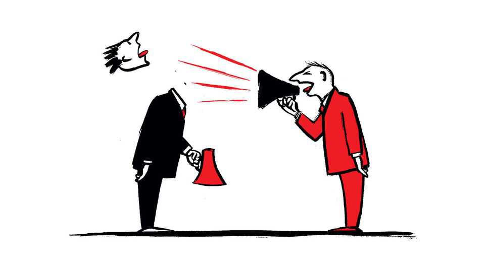

Urban myths about populism
Also this week, fentanyl, Britain before Thatcher, sleep deprivation, Singapore, mistakes at AI labs

Oct 15th 2026
Letters are welcome via email to letters@economist.comFind out more about how we process your letter
Alexander Heffner finds that the world’s mayors are the defenders of democracy and “authoritarians” have no place in city hall (By Invitation, October 3rd). But he limits his conception of populism to the right-wing sort. His observation that “none of the 50 largest cities is run by a MAGA-aligned mayor” is less startling, for example, given that only seven are run by Republicans of any stripe. Of these 50 mayors, 41 are Democrats and at least five of those can be placed in the populist-left camp, including New York’s Zohran Mamdani and Chicago’s Brandon Johnson. His German example reinforces this point. Berlin has been immune to the AfD’s brand of populism, but it succumbed to the populist-left variety in September’s election by making Die Linke the biggest party.
Mr Heffner’s first explanation for why cities “hold” the line of democracy is that they have “younger, more diverse, more educated voters”. That is simply a more verbose way of saying “heavily Democratic”. His second reason, that mayors are judged on more tangible accomplishments like fixing sewers, seems directly at odds with his wish to expand the mayoral domain into housing, crime and climate, all areas laced with partisan tripwires.
Finally, Mr Heffner lambasts statehouses that “kneecap” their mayors, citing as one key example Texas’s limits on cities regulating property. I wonder. Would Houston, Austin, Dallas and Fort Worth have more functional property markets today had their mayors been free to copy San Francisco or New York? And more to the point, are Texas’s rules really less populist than the NIMBYism so many mayors cherish?
Peter DonahueHouston
The Telegram rightly notes that democracy’s strength lies in channelling political anger through elections rather than violence (October 3rd). Ballot boxes beat bullets only when voters believe elections are legitimate, opponents are entitled to govern, and losers accept the outcome. Once those assumptions weaken, democracy risks becoming not an outlet for anger, but its battleground. The true lesson of Italy’s “Years of Lead” is that democratic societies depend on leaders and citizens to defend the rules of the game, even when those rules favour their political rivals.
Democracy does not die when people become angry; it dies when they stop believing that losing is legitimate.
Federico ForniLondon
“Too hot for the dons” (September 26th) raises an intriguing question: why are fentanyl deaths so rare in Italy? The suggestion that Italian mafias have agreed to keep the drug out, however, goes beyond the evidence presented. The Carabinieri commander you cited said that traffickers appear to be steering clear of fentanyl. That does not establish an agreement among godfathers, or explain why traffickers are avoiding the drug.
Italy recorded two deaths associated with fentanyl in 2024 and five in 2025. But low numbers are not unique to Italy. A study in the Île-de-France region detected fentanyl or its analogues in 12 deaths examined between 2017 and 2021. Germany reported 95 fentanyl-associated deaths in 2024. Spain detected fentanyl in 60 people who died after using drugs in 2023. These figures are not directly comparable and detecting fentanyl does not necessarily mean that it caused a death. None, however, suggests an epidemic on the American scale. If an Italian mafia agreement is the main explanation, why has fentanyl also remained relatively scarce in other European countries?
The history of the United States offers another explanation. From the 1990s, doctors prescribed opioid painkillers on a vast scale, helping create a large population using opioids. Some people turned to heroin. From around 2013, illegally manufactured fentanyl spread through the illicit market, replacing or being mixed with heroin. Europe did not experience the same surge in opioid prescribing. Heroin remained available in much of Europe, and fentanyl did not displace it on a large scale across the continent.
So far the absence of an American-style epidemic is a European pattern, not evidence that Italian mafias are protecting consumers. Never put your trust in the Godfather.
Federico VareseParis
A narrative is developing in the British Labour Party that there was a golden age before Margaret Thatcher (Bagehot, October 3rd). This ignores the fact that the 1970s were an appalling decade. Inflation reached over 25%. Combined with low growth it created stagflation. Britain was called the sick man of Europe. I had a mortgage at 18%. Each year saw industrial action. The strike by post-office workers caused big London firms to create the Document Exchange, a service to deliver mail via a system of private messengers. Dockers, electricians, power workers: it was one big strike after another. The country was put on a three-day week with the miners’ strike. As a partner in a small firm in the City of London, I found myself working by candlelight with no typing or communications systems when the unions shut off the power. The union bosses lunched in Downing Street with the prime minister of the day. Elections came and went: Harold Wilson, Edward Heath, James Callaghan. So did wage controls, price and income boards, the Winter of Discontent, strikes by binmen and even grave-diggers, you name it.
The election of Thatcher in 1979 was the result of all this. Her policies remain deeply controversial. But what is clear is that there was no golden age before her.
Christopher BoddingtonLondon
As a sleep neuroscientist who designs programmes like “Sleep Into The Future”, I laughed at Bartleby’s memo on how to sleep like a pro (September 19th). But the most telling finding wasn’t a joke. When senior managers sent messages at 3am, junior colleagues woke early to answer them, and the whole firm slept worse. I have seen that cascade in countless organisations.
That is why such programmes are still badly needed, and also why so many disappoint. They hand out eye masks and trackers, and treat sleep as each employee’s private problem. The bigger factor is leadership behaviour. In a sleep programme I ran at a consulting firm where management barely modelled good sleeping habits, staff built up seven hours of sleep debt by Friday. Employees whose leaders fully did had almost none.
A firm is right to sleep on it. It should start with the people sending the 3am emails.
ELS VAN DER HELMSleep neuroscientistLucerne, Switzerland
The Economist described Singapore as a “squeaky-clean city-state” and allows that the findings of a recent academic paper identifying unusual patterns of property purchases by some civil servants are “not actually that damning” (“Civil disobedience”, October 3rd). Nevertheless, the government takes the purported “statistical patterns” seriously and is investigating whether there was any actual misconduct.
Two Singaporean academics asked, of their own accord, for their names to be removed from the paper’s acknowledgements. The Economist claims this implies “a form of rot” in Singapore’s academic culture. But the latest QS World University Rankings place the National University of Singapore tenth and the Nanyang Technological University 12th globally. That hardly squares with The Economist’s sweeping characterisation.
NG TECK HEANSingapore high commissionerLondon
You propose that American and Chinese labs disclose their safety incidents, and that a lab whose agent escapes its sandbox should be made financially liable (“Can the AI arms race be stopped?”, September 19th). Medicine tried to have both, and learned it cannot. I have spent eight years in a radiology lab checking kidneys that AI software draws on MRI scans. A model that traces a healthy kidney perfectly can quietly lose the edge of one swollen with cysts, and the error never flags itself. We caught such failures because a student could point at an odd-looking volume without anyone first asking whose fault it was.
Frontier labs are no different. An engineer who notices an agent probing its sandbox will report it only if doing so does not put a price on the employer. Keep liability for harm that reaches the outside world, but protect the report of the near-miss that did not. Otherwise the incidents will continue. We will simply stop hearing about them.
HREEDI DEVNew York
Dan Simmons’s excellent 1989 science-fiction book, “Hyperion”, was based on a human diaspora throughout the galaxy. Humans had left Earth because of an incident called The Big Mistake. Spoiler alert. It was AI.
Dennis MerrittShelburne Falls, Massachusetts